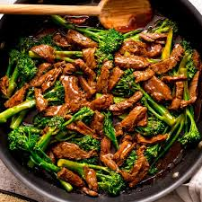

Jake's Beef and Broccoli

Description
A mouthwatering dish composed of thinnly sliced beef sauted with broccoli in a sweet and savory sauce.
Ingredients
- 1lb Beef Sirloin
- 1 Large Head Broccoli - Chopped into Florets
- 1 tbsp Fresh Ginger - Shredded
- 1 tbsp Garlic - Chopped
- 6 tbsp Soy Sauce or Tamari
- 2 tbsp Sesame Oil
- 3 tbsp Light Brown Sugar
- 2 tbsp Corn Starch
- Black Pepper to Taste
- 1/2 Cup Warm Water
- 2 tbsp Cooking Oil
Instructions
- Brown beef in Cooking Oil on high heat
- Add Broccoli, cook until dark green
- Whisk together all other ingredients
- Add to pan and simmer approx 5 min on low heat
- Serve over rice
Home